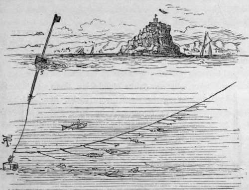

Sea Fishing From Yachts And Large Fishing Boats. Part 6
Description
This section is from the book "Sea Fishing", by John Bickerdyke. Also available from Amazon: Sea Fishing.
Sea Fishing From Yachts And Large Fishing Boats. Part 6
Trots or long lines should be coiled in a shallow basket, on the edge of which the hooks can be caught. The main length of line should always be tanned, and should be strong enough to moor a small boat ; for often, when hauling it in, the anchor or stone at one end will catch in the bottom, and the boat is held by it. Professional fishermen are exceedingly expert both in laying and taking in these lines, and will pay out miles of line from a basket without a hitch. The amateur, on the other hand, is likely to become involved in the most fearful and wonderful entanglements ; but a little practice will soon make him fairly proficient at the business.
Knot For Fastening And Quickly Unfastening Snoods From Lines.
With a line bearing some twenty hooks or so, it is only necessary to have a weight at each end—a stone, a piece of iron ballast, or a heavy leaden plummet with a ring, made specially for the purpose. A few pounds more or less weight on the line does not much matter, provided there is enough to hinder any large fish, such as a halibut of a hundred pounds, swimming off with it.
The efficient buoying of the line is very important. It is usual to fasten two or three semicircular pieces of cork into the buoy line at distances of a few fathoms ; these help to support the line, at the surface end of which is a larger piece of cork, on which it would be wise to have your initials branded ; if it is painted red so much the better. Professional fishermen sometimes have a little staff with a small flag on it stuck into the buoy. Such a one is shown in the illustration. Scotch fishermen inflate a sheep's skin, which looks like a small black balloon on the water. They use the same buoys on their herring nets. The buoy line should be half as long again as the water is deep at flood tide. In a very strong tideway the buoy is sometimes submerged ; but as the current eases it will appear again, and that, of course, is the time to take up the line.
LONG LINE SET.
Long lines are usually set across the tides, but the amateur will no doubt chiefly lay them along the coast, near rocks, in places frequented by bass and pollack, rather than in the offing. In autumn and winter, when the cod come inshore, these fish may be caught on the long line set a few hundred yards below low-water mark.
The floating trot is used for catching fish near the surface. The illustration, prepared from a piece of gear made by Mr. Hearder, of Plymouth, renders a detailed description unnecessary. The horizontal line which bears the snoods is buoyed at short intervals, in addition to the larger buoys. Ordinary hemp snooding may be used for the hooks, or, what is better, there may be eighteen inches of horsehair and eighteen inches of twisted salmon gut, or single gut if the fish do not run very large. Some people place a small pipe lead on every snood just at the junction of the horsehair with the gut.
Live sand-eels, smelts, or very small dabs, flounders and plaice may be used for baiting this line. It is very desirable that the baits should be alive. Sometimes sea trout, and very occasionally salmon, are caught in this way. The ordinary long line may, of course, be baited with live sand-eels, and if this is done in an estuary in the autumn, large bass are likely to be taken.
It is with great reluctance that I venture any remarks which may lead to an increase of trawling ; for the practice has long been doing great injury to the fisheries all round our coasts. Flat fish, and, in particular, soles and plaice, have become exceedingly scarce in many places. Unless trawling is absolutely prohibited in territorial waters, and the sale of immature flat fish is made an offence, irreparable harm will be done to a very important calling.
In this matter the sportsman and the poorer fishermen who obtain a living by setting long lines near the coast are on the same footing. Both of them suffer from the disastrous effects of not only the destruction of immature fish, but also of overfishing the shallow inshore grounds. The sea is no doubt a large place, but the portions of it which can be profitably fished are far more limited than the general public suppose.
For some reason or another a number of leading scientific men have for some time been rather fighting the battle of the trawler, and a cry of delight was raised by them when some one pointed out that the eggs of the principal food fishes float on the surface. 'Therefore,' said they, being all unpractical men, ' you see, after all, the trawlers do no harm ; for they do not disturb the eggs.' These worthy but unpractical people altogether left out of consideration the fact that the eggs hatch, and in due course the resulting small fish retire to the bottom, where they are scraped up by the trawl together with stones, prickly sea urchins, conger eels, -spiny thornbacks, oysters, sharp-edged shells of various kinds, and a vast quantity of debris ; and that, after being towed along in the cod of a net in such dangerous company, these wretched little creatures are brought out and emptied on deck, crushed, bruised, and injured almost beyond the power of identification.
It has been truly said that you can prove anything by means of statistics, and figures have been used to prove that our fisheries are not being injured by trawls. The proof is easily effected in the following manner : The number of boxes of fish caught in 1866, let us say, are not so many as the number of boxes of fish caught in 1895. ' You see,' says the trawler, ' we are catching more fish now, therefore our fisheries cannot be falling off.' But the weak point in this argument is that there are many more vessels with much more deadly engines of destruction engaged in the fishing industry now than there were in 1866, which is the real reason why more fish are brought to market. Moreover, our boats go farther afield to new fishing grounds. Even the trawlers and their learned friends admit that certain kinds of fish are scarcer than they used to be.
Continue to:
- prev: Sea Fishing From Yachts And Large Fishing Boats. Part 5
- Table of Contents
- next: Sea Fishing From Yachts And Large Fishing Boats. Part 7
Tags
fishing, hooks, bait, fishermen, spanish mackerel, mackerel fishing